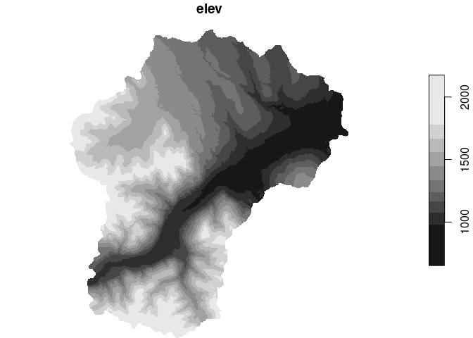
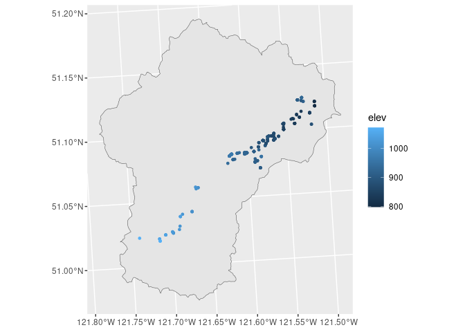
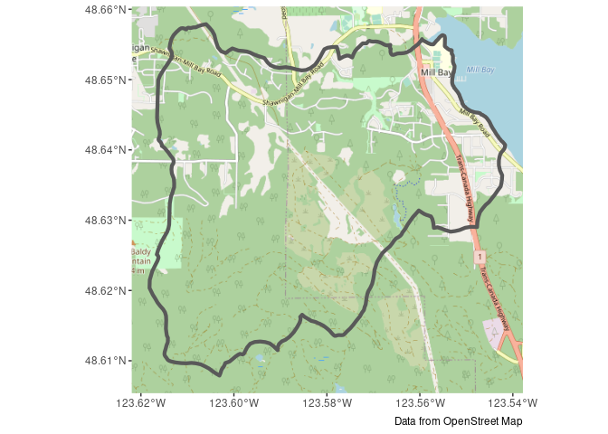
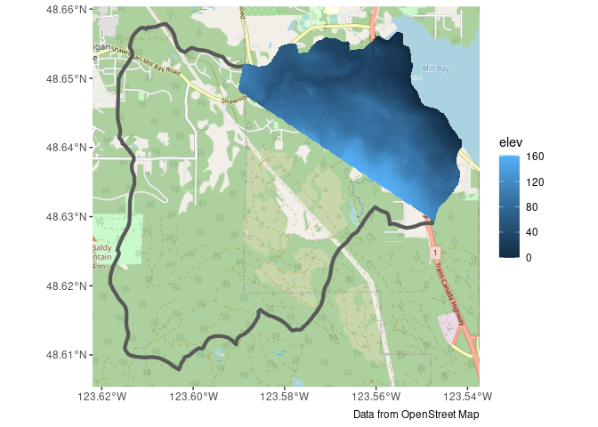
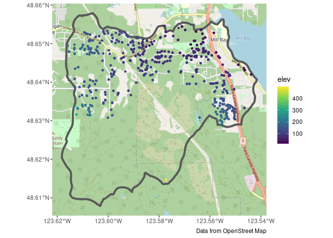

This is an R package for processing BC Gov GWELLS data into formats more suitable for other analyses (e.g., Strater, Voxler, ArcHydro).
The functions provided here allow users to filter GWELLS data by region (shapefile), calculate and add elevation data from Lidar or TRIM, and clean and categorize GWELLS lithology and yield data.
The Shiny app (a graphical user interface), provides a tool for data exploration and exporting.
We’re still actively refining and adding to this tool, but it is maturing.
In Detail
Update RStudio (if it’s been a while)
Update R (if it’s been a while)
Open RStudio
-
Install remotes In the console type the following and hit enter
install.packages("remotes") -
Install bcgwcat In the console type the following and hit enter (be sure to install all updates if prompted!)
remotes::install_github("bcgov/bcgwcat")
Using bcaquiferdata
Shiny User-Interface
Type this line into the R console at the prompt (in the screen with >) and hit ‘Enter’.
bcaquiferdata::aq_app() # Launch the appSee the tutorial for a more in-depth look at how to use the User Interface
R command line
A general workflow ‘by hand’ (without using the app) is to run through the various steps using the functions directly.
This gives you a bit more flexibility in how you explore and/or filter your data.
Let’s work through a couple of examples (note these are presented for illustration, but the shape files are not included in the package)
Clinton Creek Load a shape file defining the region of interest
creek_sf <- st_read("misc/data/Clinton_Creek.shp")#> Reading layer `Clinton_Creek' from data source
#> `/home/steffi/Projects/Business/BC Government/bcaquiferdata/misc/data/Clinton_Creek.shp'
#> using driver `ESRI Shapefile'
#> Simple feature collection with 1 feature and 15 fields
#> Geometry type: POLYGON
#> Dimension: XY
#> Bounding box: xmin: 1294896 ymin: 671234.7 xmax: 1315854 ymax: 695645.2
#> Projected CRS: NAD83 / BC AlbersFetch Lidar DEM (this may take a while the first time)
creek_lidar <- dem_region(creek_sf)#> Get Lidar data
#> Saving new tiles to cache directory: ~/.local/share/bcaquiferdata
#> Checking for matching tifs
#> Fetching bc_092p002_xli1m_utm10_2019.tif - skipping (new_only = TRUE)
#> Fetching bc_092p013_xli1m_utm10_2019.tif - skipping (new_only = TRUE)
#> Fetching bc_092p012_xli1m_utm10_2019.tif - skipping (new_only = TRUE)
#> Fetching bc_092i092_xli1m_utm10_2019.tif - skipping (new_only = TRUE)
#> Fetching bc_092p003_xli1m_utm10_2019.tif - skipping (new_only = TRUE)
#> Cropping DEM to regionPlot to double check
plot(creek_lidar)#> downsample set to 39
Collect wells in this region with added elevation from Lidar
creek_wells <- creek_sf |>
wells_subset() |> # Subset to region
wells_elev(creek_lidar) # Add Lidar#> Subset wells
#> Add elevationPlot again to double check

Export data for Strater, Voxler, and ArcHydro
wells_export(creek_wells, id = "clinton", type = "strater")#> Writing Strater files ./clinton_strater_lith.csv, ./clinton_strater_collars.csv, ./clinton_strater_wls.csv
#> [1] "./clinton_strater_lith.csv" "./clinton_strater_collars.csv"
#> [3] "./clinton_strater_wls.csv"
wells_export(creek_wells, id = "clinton", type = "voxler")#> Writing Voxler file ./clinton_voxler.csv
#> [1] "./clinton_voxler.csv"
wells_export(creek_wells, id = "clinton", type = "archydro")#> Writing ArcHydro files ./clinton_archydro_well.csv, ./clinton_archydro_hguid.csv, ./clinton_archydro_bh.csv
#> [1] "./clinton_archydro_well.csv" "./clinton_archydro_hguid.csv"
#> [3] "./clinton_archydro_bh.csv"Mill Bay Watershed Load a shape file defining the region of interest
mill_sf <- st_read("misc/data/MillBayWatershed.shp")#> Reading layer `MillBayWatershed' from data source
#> `/home/steffi/Projects/Business/BC Government/bcaquiferdata/misc/data/MillBayWatershed.shp'
#> using driver `ESRI Shapefile'
#> Simple feature collection with 1 feature and 16 fields
#> Geometry type: POLYGON
#> Dimension: XY
#> Bounding box: xmin: 1175893 ymin: 402094.9 xmax: 1181462 ymax: 407633.1
#> Projected CRS: NAD83 / BC AlbersWe’ll check against some tiles
g <- ggplot() +
annotation_map_tile(type = "osm", zoomin = -1) +
geom_sf(data = mill_sf, fill = NA, linewidth = 1.5) +
labs(caption = "Data from OpenStreet Map")
g
Fetch Lidar DEM (this may take a while the first time)
mill_lidar <- dem_region(mill_sf)#> Get Lidar data
#> Saving new tiles to cache directory: ~/.local/share/bcaquiferdata
#> Checking for matching tifs
#> Fetching bc_092b063_xl1m_utm10_2019.tif - skipping (new_only = TRUE)
#> Fetching bc_092b062_xl1m_utm10_2019.tif - skipping (new_only = TRUE)
#> Cropping DEM to regionAdd to our plot to double check
mill_lidar_sf <- stars::st_downsample(mill_lidar, n = 12) |> # Downsample first
st_as_sf(as_points = FALSE, merge = TRUE) # Convert to polygons#> for stars_proxy objects, downsampling only happens for dimensions x and y#> Zoom: 13
Looks like we don’t have elevation data for the whole region. This can be confirmed by checking the online LidarBC map
Let’s take a look our our options using TRIM data.
mill_trim <- dem_region(mill_sf, type = "trim")#> Get TRIM data
#> checking your existing tiles for mapsheet 92b are up to date
#> Cropping DEM to regionAdd to our plot to double check
mill_trim_sf <- mill_trim |>
st_as_sf(as_points = FALSE, merge = TRUE) # Convert to polygons
g + geom_sf(data = mill_trim_sf, aes(fill = elev), colour = NA)#> Zoom: 13
TRIM is at a coarser resolution, but covers our entire area. Let’s use it instead.
Collect wells in this region with added elevation from TRIM.
mill_wells <- mill_sf |>
wells_subset() |>
wells_elev(mill_trim)#> Subset wells
#> Add elevationPlot again to double check, see that we now elevation data for all wells.
g +
geom_sf(data = mill_wells, size = 1, aes(colour = elev)) +
scale_color_viridis_c(na.value = "red")#> Zoom: 13
Export data for Strater, Voxler, and ArcHydro
wells_export(mill_wells, id = "mill", type = "strater")#> Writing Strater files ./mill_strater_lith.csv, ./mill_strater_collars.csv, ./mill_strater_wls.csv
#> [1] "./mill_strater_lith.csv" "./mill_strater_collars.csv"
#> [3] "./mill_strater_wls.csv"
wells_export(mill_wells, id = "mill", type = "voxler")#> Writing Voxler file ./mill_voxler.csv
#> [1] "./mill_voxler.csv"
wells_export(mill_wells, id = "mill", type = "archydro")#> Writing ArcHydro files ./mill_archydro_well.csv, ./mill_archydro_hguid.csv, ./mill_archydro_bh.csv
#> [1] "./mill_archydro_well.csv" "./mill_archydro_hguid.csv"
#> [3] "./mill_archydro_bh.csv"Extra tools
Load cleaned data (will fetch if doesn’t already exist)
wells_lith <- data_read("lithology")Explore the lithology standardization performed by bcaquiferdata
lith_std <- wells_lith |>
select(well_tag_number, contains("lith")) |>
arrange(!is.na(lithology_category))
lith_std#> # A tibble: 618,156 × 17
#> well_tag_number lithology_from_ft_bgl lithology_to_ft_bgl lithology_raw_data
#> <dbl> <dbl> <dbl> <chr>
#> 1 11 164 187 "red ash"
#> 2 13 1 120 "\""
#> 3 49 0 15 <NA>
#> 4 62 0 0 "backfilled to 217…
#> 5 73 25 170 "delimite w/copper…
#> 6 73 190 380 "copper ore w/deli…
#> 7 88 0 65 <NA>
#> 8 98 0 15 <NA>
#> 9 105 0 15 <NA>
#> 10 163 200 210 "gray,clean a litt…
#> # ℹ 618,146 more rows
#> # ℹ 13 more variables: lithology_description_code <chr>,
#> # lithology_material_code <chr>, lithology_hardness_code <chr>,
#> # lithology_colour_code <chr>, lithology_observation <chr>,
#> # lithology_from_m <dbl>, lithology_to_m <dbl>, lithology_clean <chr>,
#> # lith_primary <chr>, lith_secondary <chr>, lith_tertiary <chr>,
#> # lithology_extra <chr>, lithology_category <chr>Save it to peruse later
write_csv(lith_std, "lith_categorization.csv")Vignette/Tutorials
See the bcaquiferdata website
License
Copyright 2024 Province of British Columbia
Licensed under the Apache License, Version 2.0 (the “License”); you may not use this file except in compliance with the License. You may obtain a copy of the License at
http://www.apache.org/licenses/LICENSE-2.0
Unless required by applicable law or agreed to in writing, software distributed under the License is distributed on an “AS IS” BASIS, WITHOUT WARRANTIES OR CONDITIONS OF ANY KIND, either express or implied. See the License for the specific language governing permissions and limitations under the License.